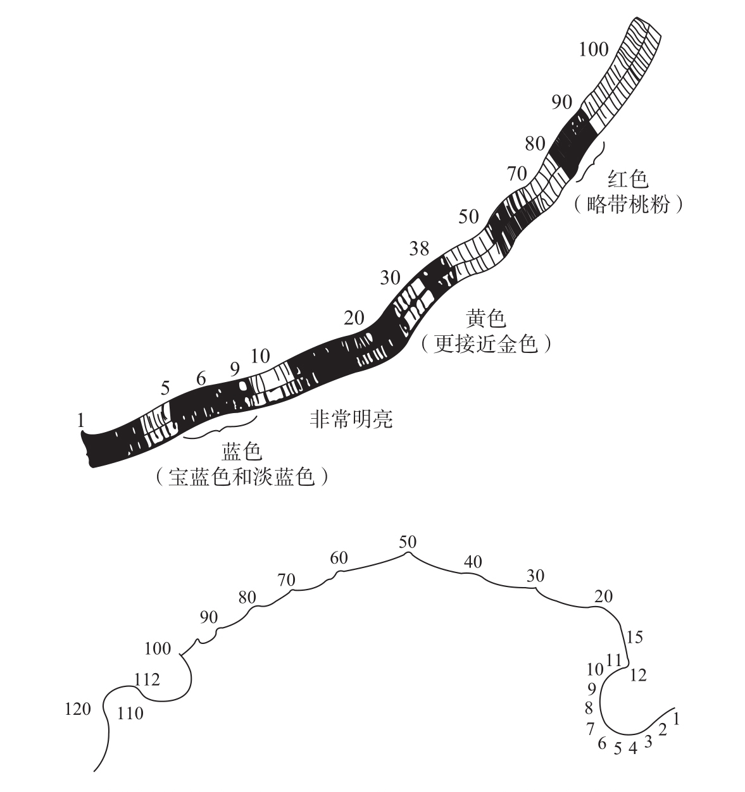

大部分人头脑中都有一条从左向右延伸的无意识数轴，不过有些人对数字有更加生动的形象知觉。5%～10%的人确信数字有颜色，而且具有非常精确的空间位置29。早在19世纪80年代，约翰·高尔顿（John Galton）爵士就观察到他的一些熟人，其中大多是女士，能够赋予数字极其精确和丰富生动的特质，这对别人来说是无法理解的30。他们中有一位将数字比作一条向右延伸的丝带，由蓝色、黄色和红色等丰富的色彩渐变而成（见图3-5）。

这些图所描述的是高尔顿的两个被试所体验到的“数形”（number forms）。其中一个被试看到的是一条向右延伸的彩带。另一个被试把数字排列在一条扭曲的曲线上，其初始部分类似于一个时钟的钟面。
图3-5 大脑中的“数形”
资料来源：转自Galton, 1880，版权所有©1880 by Macmillan Magazines Ltd。
另一位声称从1到12的数字盘绕成一个圆形的曲线，在10到11之间有一个轻微的断点。过了12曲线开始向左延伸，在每个整十数处就有一段弯曲。还有人认为在他心里数字1到30呈垂直柱状排列，接下来以整十数为单位逐渐向右偏移。在他看来，这些数字“大概1.27厘米长，暗棕灰色带着一点亮灰色”。
不管听起来多古怪，这样的“数形”都不是这些想象力丰富的维多利亚时代的人为了满足高尔顿对数字的热情而杜撰的。在距高尔顿的时代1个世纪的现代，一项研究发现，大学生也能够感知到类似的数字图像。有人看到同样的曲线，有人看到同样的直线，也有人说整十数时就会出现外形的突然变化，等等31。此外，数字和颜色之间的关联是系统的：大多数人会把黑色和白色与0和1或者8和9相关联；把黄色、红色和蓝色与2、3和4等小数相关联；将棕色、紫色和灰色与6、7和8等大数相关联32。
这些统计出来的规律表明，大多数声称体验到数形的人是真实可信的。他们似乎忠实地描述了一种极其精确的真实知觉。有个被试被要求用50支彩色铅笔在纸上画出她知觉到的数字形象。在间隔一个星期的两次测试中，她选择了几乎完全一样的颜色。对于一些数字，她甚至觉得自己需要混合几种铅笔的色调，才能更准确地刻画她头脑中的图像。
尽管数形很少见而且显得很奇怪，它却与“正常”的数量表征之间有许多共同的特性。整数序列几乎总是一条连续的曲线，1在2的旁边，2在3的旁边，依此类推。只有在极少数的情况下，在整十数的边界处，如在29和30之间，会出现方向上的突然变化或小小的不连续性。至今还没有一个人声称他看到的是一个混乱的数字图像，比如质数或平方数被组织在同一曲线上。数量的连续性是数形的组织所遵守的主要参数。
数字和空间之间的关系也有所体现。在大多数的数形中，越来越大的数字会向右上方延伸。最终，大多数人声称他们的数形在表征大数字时变得越来越模糊。这正是大小效应或压缩效应的体现，是动物和人类表征数字的特点，它限制了我们对大数进行心理表征的精确度。
数形在本质上可以被当作大家所共有的心理数轴的另一个版本，该版本中的心理数轴可以被意识到，并且更加丰富。大多数人的心理数轴只能通过精细的反应时实验反映出来，但是数形能够被有意识地知觉，而且具有丰富的视觉细节，如颜色，或是空间上的精确定位。这些修饰从何而来？被问及此，拥有数形的人说它们在自己8岁之前就自然地出现了，或者是从记事起就一直存在。有时候，一个家庭的几名成员具有相同的数形。然而，这并不意味着它一定有遗传因素，因为家庭环境也可能是一个决定性因素。
我个人的猜测是，数形的形成，可能跟空间和数字的脑皮层发育有关系。正如第2章所提到的，婴儿可能已经有了数量的“心理表征”。在3到8岁之间，伴随着学校教育，为了适应儿童日益增长的大数知识以及以十进制为基础的记数方式，初始的数轴一定被大大丰富了。我们可以推测，算术的习得过程伴随着负责“数字地图”的脑皮层的逐渐扩张，这种扩张在动物学习精细手工任务时也被观察到了，它发生在大脑感觉运动区域。正如我们将在第7章和第8章中看到的，在邻近顶枕颞叶的联合处，有一块更靠后更靠两侧的大脑区域，称为下顶叶皮层，算术知识的神经网络的扩张很可能发生在这一区域。由于神经元的总数是恒定的，数字神经网络的扩张必然会牺牲周围的脑皮层，诸如编码颜色、形状和位置的区域。而对有些儿童来说，非数字区域的缩小可能并没有达到最大限度。在这种情况下，编码数字、空间和色彩的脑皮层之间就会存在部分重叠，并在主观上转化成一种无法抑制的“看到”数字的颜色和位置的感觉。类似的原因也许能够解释联觉这一相关现象，例如诗人和音乐家所熟知的感受：声音具有形状，味道唤起色彩。
尽管这种解释有些推测的成分，但是这个关于脑皮层如何被越来越精细化的数字表征侵占的理论是有证据的。神经心理学家斯波尔丁（Spalding）和奥利弗·赞格威尔（Oliver Zangwill）描述了一个24岁的患者，在左侧顶枕区受到损伤之后，他感知数字视觉图像的能力突然消失了。这一区域一直以来都被认为在心算方面发挥着核心作用33。事实上，这位患者在计算和空间定位上也都出现了严重障碍，我们会在第7章更详细地讨论这种神经系统综合征。这一病例证实：“看到数字”的主观感觉依赖于数字和空间信息在大脑皮层的同一区域同时编码。
此外，皮层表征可能会重叠，进而导致奇怪的主观感觉这一假设在对截肢患者的研究中也得到了验证34。截掉一只胳膊后，这只胳膊对应的感觉皮层区域会空置，之后会被周围的感觉区域侵占，例如感觉头的区域。极少数情况下，刺激患者面部的某些点位，会使患者感觉到刺激好像是来自失去的胳膊，从而产生一种无法克制的拥有“幻肢”的感受。例如，一滴水落在脸上，给人的感觉就像已经不存在的手臂浸没在一个水桶中！我相信，数字引起不存在的颜色和形状知觉的数形现象，也同样起源于大脑皮层表征的重叠。